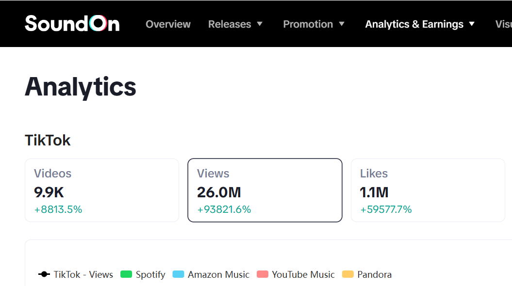

TikTok関連動画
累計再生回数
01 ABOUT
閃きに残る音を、
形に。
Assyuは、YouTube・SNS・広告・ショート動画のための音楽を制作するクリエイターです。コンテンツの新鮮さを引き立て、短い時間で耳に残るサウンドをつくります。
Assyuの楽曲を使用したTikTok関連動画は累計2,600万再生。聴き手の感情と画面のテンポに寄り添う音を追求しています。
SOUND
MAKES
MOMENT.
MAKES
MOMENT.
02 RESULTS
数字が語る、
音の広がり。
多くの動画で使われ、聴かれ、届けられた音。
その反応を、次の一曲へつなげています。
楽曲を使用した
関連動画数
関連動画
累計いいね数
PERFORMANCE SNAPSHOT
響きは、
次の表現へ。
Assyuの楽曲を使用したTikTok関連動画について、SoundOn Analyticsに表示された過去365日の集計値を掲載しています。数値は取得時点のもので、Assyu本人のTikTokアカウント再生数ではありません。

03 WHY ASSYU
「流れる」から、
「残る」へ。
画面のなかで生まれる最初の数秒。その瞬間を、もっと印象的にするために。
閃きに寄り添う
短い尺でも感情が伝わる、フレーズと音の輪郭を大切にしています。
ナレーションを邪魔しない
声と画面の主役を引き立てる、余白を持ったサウンドを設計します。
使いやすい
映像・SNS・広告など、幅広い用途に馴染む音楽を届けます。
FOR YOUR CONTENT
コンテンツに、
合う音を。
ショート動画、企業SNS、YouTube、商品紹介。
シーンとコンテンツの温度に合うBGMを用意しています。
04 AUDIOSTOCK
LICENSED MUSIC
商用利用できる
BGMを、ここから。
Assyuの楽曲はAudiostockで試聴・購入できます。ライセンス条件や料金は、Audiostockの各楽曲ページでご確認ください。
楽曲ページのURLは公開準備中です。
05 PROFILE
MUSIC CREATOR / COMMERCIAL BGM / SNS SOUND
Assyu
Assyuの楽曲を使用したTikTok関連動画は、過去365日で累計2,600万再生、関連動画約9,900本。映像とSNSのための、使いやすく耳に残るサウンドを制作しています。
制作・楽曲利用に関するご相談窓口は準備中です。
READY TO FIND YOUR SOUND?